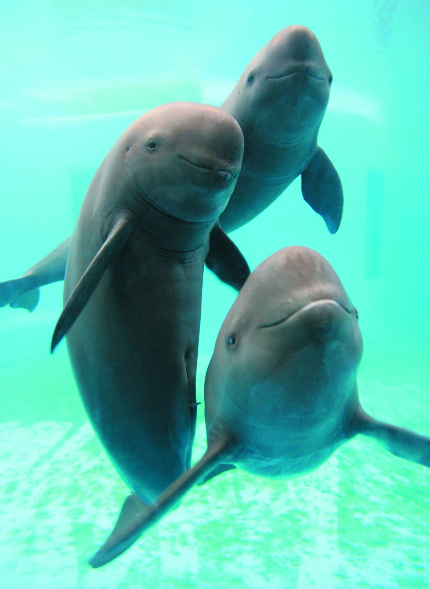

The Yangtze River, the longest river in Asia, used to be one of the only two rivers in the world that was home to two different species of dolphin—the Yangtze finless porpoise and the Baiji dolphin. However, in 2006 the Baiji dolphin was declared functionally extinct. This was the first time in history that an entire species of dolphin had been wiped off the planet because of human activity.
Its close cousin, the Yangtze finless porpoise, is known for its mischievous smile and has a level of intelligence comparable to that of a gorilla. They are no considered critically endangered and their population is estimated at 1000-1800.